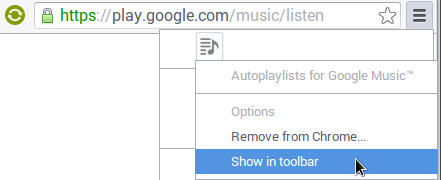

Autoplaylists for Google Music™
This Chrome extension adds customizable rule-based autoplaylists to Google Music. They work just like iTunes "smart playlists".

This extension is not supported nor endorsed by Google.
Installation
You can install from the Chrome Web Store: Autoplaylists for Google Music™.
There is both a free limited version and a paid full version. The only difference is that the free version is limited to a single autoplaylist. See the the versions and upgrading section of the FAQ for all the details.
Usage
- open a tab to https://play.google.com/music/listen.
- click the extension's "page action": the small icon to the right of the url.
- your autoplaylists will be updated automatically in real time. See the FAQ for more details.
This is what the page action looks like:

Newer versions of Chrome put the icon to the right of the star.
If you don't see the page action, it may be hidden.
To unhide it, click the hamburger button then right-click the icon and select 'Show in toolbar':

Support
Visit the wiki for support and more details on how the extension works.
Contributing
The code powering the extension is open source, and contributors get free lifetime access to the full version (at my discretion). For more details, see the GitHub project page.
Updates/Changelog
To receive announcements about new features or improvements, join the announcement mailing list. The changelog on GitHub also has detailed descriptions of what's new in each release: CHANGELOG.md.